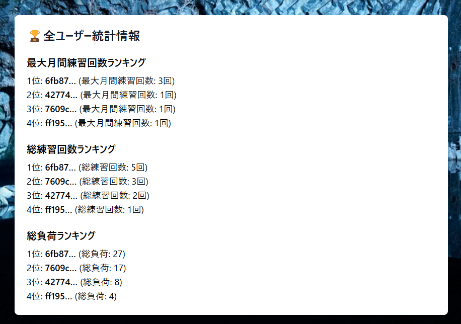
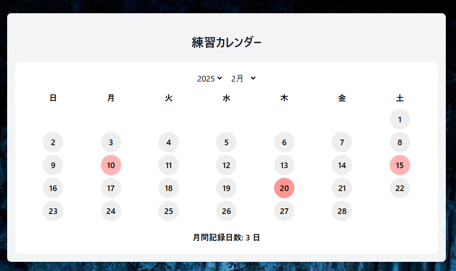
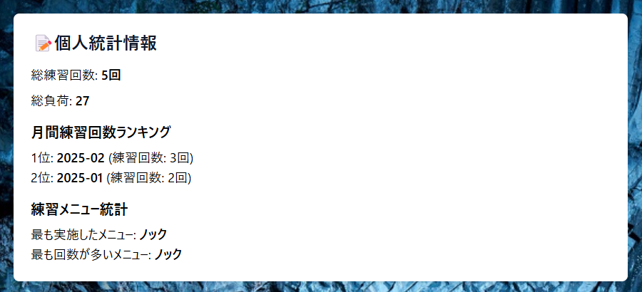
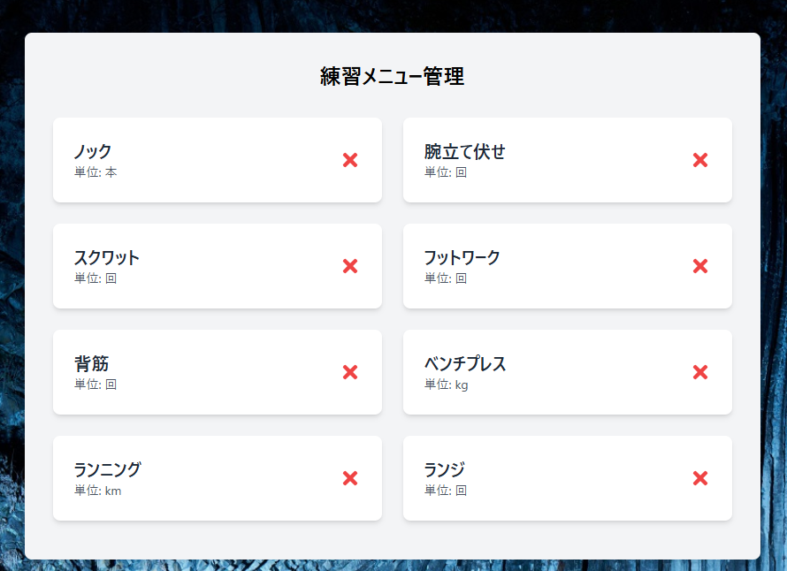
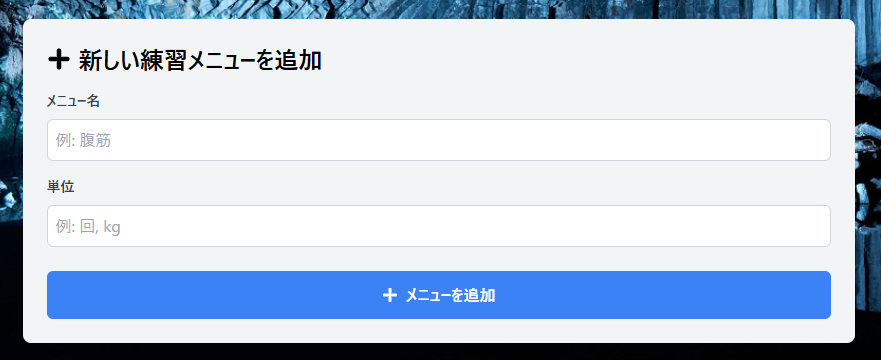
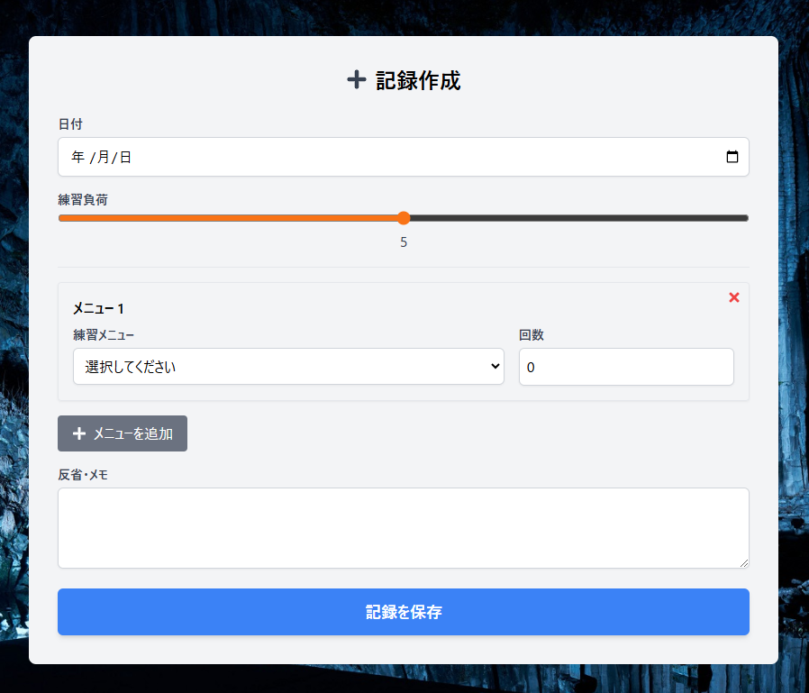
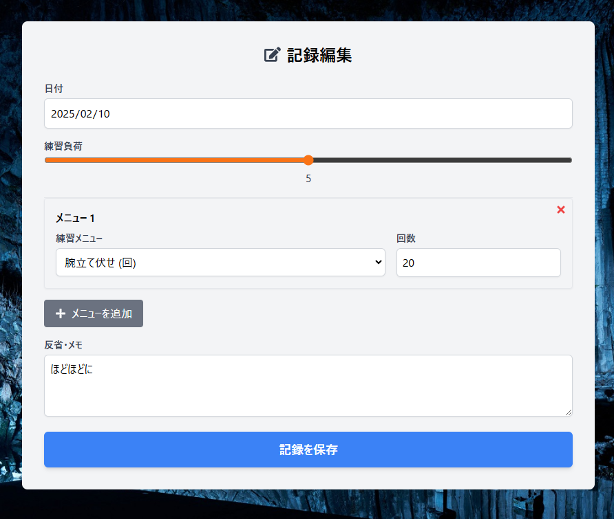

Training App
「Training App」は、ユーザーが自身のトレーニング記録を管理し、過去の自分との練習量を比較することで計画的な成長をサポートするウェブアプリケーションである。
ユーザーは日々の練習記録を登録・編集でき、統計情報を確認できる。また、全ユーザーの統計からランキング機能を搭載し、切磋琢磨しながらトレーニングを楽しむことができる。

開発動機
中学校の陸上部時代、顧問の先生の指導で練習記録ノートをつけていた際、紙の記録では管理や振り返りが難しいという課題を実感した。
よってデジタルで簡単に記録管理し、統計情報を視覚的に確認できるアプリを作ることで、自分の成長とモチベーションの維持を支援したいという思いから本アプリを開発した。
使い方
- Sign up と Log in を行うと、すぐに利用を開始できます。
-
ヘッダーに表示される各機能の説明
・練習カレンダー：ホーム画面
・記録を追加：練習記録の新規作成ページ
・メニュー管理：好きな練習メニューを作成できるページ -
ログイン後、ホーム画面が表示され、練習記録した日がカレンダー上で赤色で表示されます。
設定した練習負荷によりカレンダーの色が変化し、赤い円をクリックすることでデータの編集が可能です。 -
個人の統計情報のほか、全ユーザーの統計からランキング機能も利用可能です。

-
メニュー管理では、練習メニューの作成と表示ができます。
 -
記録を追加の画面では、複数の練習メニュー選択や練習負荷の設定が可能です。
 -
記録編集は、練習カレンダーの赤い丸をクリックすることで、その日のデータ編集が可能です。

苦労した点・こだわった点
- 全ユーザーの統計取得時に、APIではなくRPC関数を用いることでデータベースとのやり取りを効率化し、パフォーマンスを向上させた点。
- 練習記録に対し複数の練習メニューを設定するため、「マスター・ディテール（親子）関係」を活用し、理想的な実装を実現した点。
今後実装していきたい点
- ユーザーIDではなく、ニックネーム表示によるセキュリティ強化
- スポーツ別など、詳細なカテゴリでの統計機能の拡充
- グループ機能の搭載による、部内での記録比較やアドバイス機能の実装
使用技術
- Next.js および React
- Supabase
- Tailwind CSS
- React Icons
開発履歴
2024年1月23日：プロジェクト開始